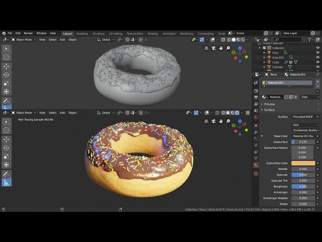

To become a 3D VFX Artist, you need a strong blend of technical mastery, artistic talent, and specialized education. While a formal degree is not always strictly mandatory, most successful artists hold a bachelor's degree in animation, visual effects, computer graphics, or fine arts. These programs provide a critical foundation in traditional art principles like anatomy, lighting, composition, and color theory, while also training students on industry-standard software. On the technical side, you must develop expert proficiency in specialized programs like Houdini, Maya, and Unreal Engine, alongside compositing software like Nuke. Mastering these tools allows you to handle complex physics simulations, including fluid dynamics, fire, explosions, and destruction networks. Additionally, employers highly value soft skills such as collaborative communication, creative problem-solving, and adaptability under tight production deadlines. Ultimately, your professional portfolio or demo reel showcasing your best procedural effects and visual storytelling will be the most decisive factor in securing a role.
Good requirments & skills to have: